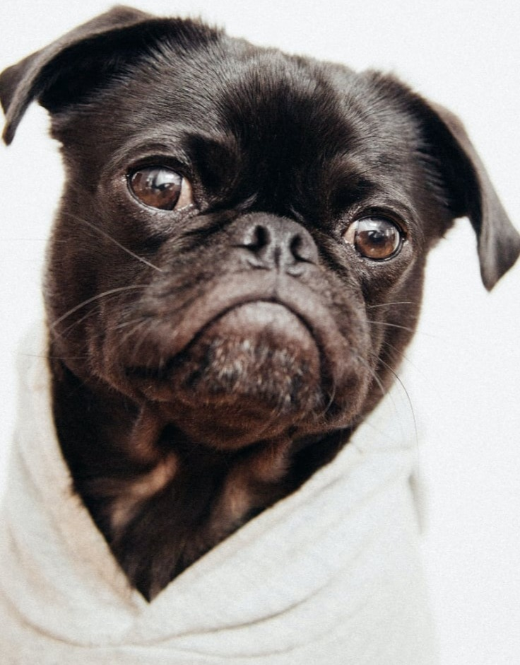

Avem cele mai fericite animăluțe


Avem 2 clinici medicale dotate cu aparatură de ultimă generație, dintre care una dedicată intervențiilor chirurgicale și clinică de fizioterapie pentru câinii cu probleme locomotorii dotată cu bazin cu bandă și cu apă. De asemenea, adăpostul are cameră special amenajată pentru câinii paraplegici, fiecare având propria garsonieră și propriul cărucior cu rotile.
Datorită generozității sponsorilor
noștri și donațiilor primite am reușit să dotam adăpostul nostru pentru a răspunde necesităților de
îngrijire a celor 500 de câini. În ultimii ani adăpostul nostru a trecut printr-un proces amplu de
reconstrucție și reamenajare pentru a le oferi locatarilor noștri patrupezi cele mai bune condiții de
viață.
Astfel, am reamenajat și recondiționat 105 padocuri de dimensiuni diferite, în funcție de nevoile
câinilor, 6 dintre acestea fiind încălzite și ocupate de câinii seniori sensibili. Am amenajat 4 locuri
de joacă cu mini piscine, trambuline, pistă de agilitate, fântână arteziană, groapă de nisip și loc
dedicat alergării câinilor.
4 locuri de joacă special amenajate pentru câini
2 clinici medicale dotate cu aparatură de ultimă
generație
SPA pentru toate animăluțele

HTML Website Generator